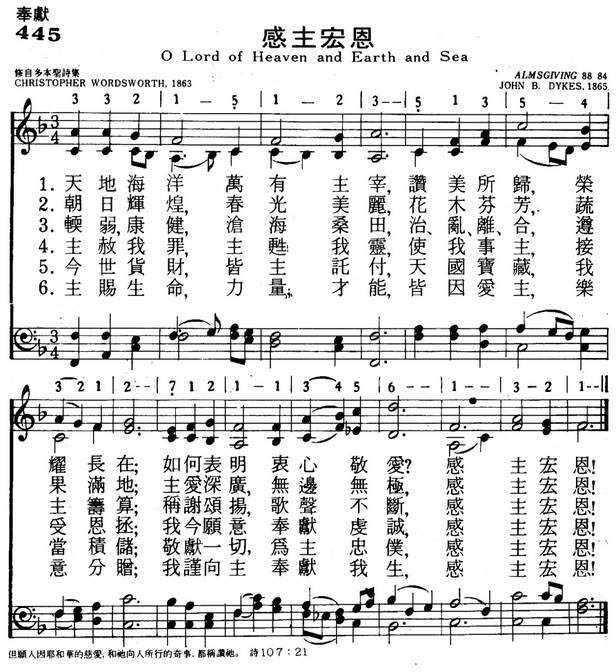

|
|
颂主新歌 |
|
1 O Lord of heav'n and earth and sea, 2 The golden sunshine, vernal air, 3 For peaceful homes and healthful days, 4 Thou didst not spare Thine only Son, 5 Thou giv'st the Holy Spirit's dow'r, 6 For souls redeemed, for sins forgiv'n, |
1.天地海洋万有主宰，赞美所归， |
|
https://www.mred365.cn/szxg/7448.html  |
|
|
|
|

-
O Lord of heaven and earth and sea https://youtu.be/BpiKa9ptiKQ -
https://youtu.be/-KRHSg6Q3Kc
| Text: | O Lord of heaven and earth and sea |
| Author: | Christopher Wordsworth, 1807-85 |
| Tune: | ALMSGIVING |
| Composer: | John Bacchus Dykes, 1823 - 76 |
| Short Name: | Christopher Wordsworth |
| Full Name: | Wordsworth, Christopher, 1807-1885 |
| Birth Year: | 1807 |
| Death Year: | 1885 |
Christopher Wordsworth--

nephew of the great
lake-poet, William Wordsworth--was born in 1807. He was educated at
Winchester, and at Trinity College, Cambridge, where he graduated B.A., with
high honours, in 1830; M.A. in 1833; D.D. in 1839. He was elected Fellow of
his College in 1830, and public orator of the University in 1836; received
Priest's Orders in 1835; head master of Harrow School in 1836; Canon of
Westminster Abbey in 1844; Hulsean Lecturer at Cambridge in 1847-48; Vicar
of Stanford-in-the-Vale, Berks, in 1850; Archdeacon of Westminster, in 1865;
Bishop of Lincoln, in 1868. His writings are numerous, and some of them very
valuable. Most of his works are in prose. His "Holy Year; or, Hymns for
Sundays, Holidays, and other occasions throughout the Year," was published
in [1862], and contains 127 hymns.
--Annotations of the Hymnal, Charles Hutchins, M.A., 1872.
Notes
O Lord of heaven, and earth, and sea. Bishop C. Wordsworth of Lincoln. [Offertory.] First published in the 3rd edition of his Holy Year, 1863, in 9 stanzas of 4 lines, and headed, "Charitable Collections." It is in extensive use in Great Britain and America, sometimes in its original form, as in the 1869 Appendix to the Society for Promoting Christian Knowledge Psalms & Hymns, and again as altered in Hymns Ancient & Modern, or the S.P.C.K. Church Hymns, and others. The changes in the text of the Church Hymns were approved by the author. His authorised text is in the 6th edition of his Holy Year, 1872.
--John Julian, Dictionary of Hymnology (1907)
Tune Information
| Title: | ALMSGIVING |
| Composer: | John Bacchus Dykes (1865) |
| Meter: | 8.8.8.4 |
| Incipit: | 33215 12351 35432 |
| Key: | F Major |
| Copyright: | Public Domain |

第233首 降恩之主歌 O Lord of heaven and earth and Sea _沃兹沃思
经文：“但愿人因耶和华的慈爱和祂向人所行的奇事，都称赞祂”(诗107：21)。
这首诗是英国圣公会主教沃兹沃思(事略参阅第ll2首)还在乡间教会担任牧师时，所写的一首美丽动人的奉献圣诗。他鉴于信徒往往希望从教会得点什么，礼拜时也无非是为了求福免灾。于是，为了扩大信徒的视野，就写了这首诗，引导信徒应多思想创造万物的主宰，他“既不爱惜自己的儿子为我们众人舍了，岂不也把万物和他一同白白地赐给我们吗?”(罗8：32，所以信徒的人生，应是奉献一切的受托的人生(第五节)；应是甘心情愿将所有的分给他人的施舍的人生。
原诗初见于作者的《圣年》诗集中，共有九节。
曲谱调名叫《GERORTIUS》，是戴克斯(事略参阅第1首)所写，原来是为配纽曼主教(事略参阅第262首)的另一首诗而作，后人将它配以沃兹沃思这首诗。
这首《降恩之主歌》是由沈子高(事略参阅第87、333首)主教译述的。
Words: Christopher Wordsworth (b. Oct. 30, 1807; d. Mar.
20, 1885)
Music: Almsgiving (or Dykes), by
John Bacchus Dykes (b. Mar. 10, 1823; d. Jan. 22, 1876)
Links:
Wordwise Hymns (Christopher
Wordsworth)
The Cyber
Hymnal
Hymnary.org
Note: Christopher Wordsworth was the nephew of famed poet William Wordsworth. For a time, he served as the head master of Harrow Boys School. Later he became the pastor of a church in an English town with the odd name of Stanford-in-the-Vale-cum-Goosey. He wrote many hymns, including O Day of Rest and Gladness, which presents three reasons why Christians have set aside Sunday as the Lord’s Day.
The history of money goes back a long way. In the beginning the currency used was things useful in themselves, such as livestock or sacks of grain. These were presented as payment for something else, a house, or perhaps a bride. Later, smaller and more portable things such as shells and beads became a recognized currency.
By 2000 BC, precious metals, gold and silver, were measured out by weight to make purchases. Abraham bought a piece of property as a burial ground for his wife, by weighing out four hundred shekels of silver (Gen. 23:14-16). The first coins came into use around 1000 BC, with paper money coming along much later.
Today, coins and paper money are still in common use, but two new means of payment are gaining ground. Credit cards were introduced in the 1950’s, and today many carry out Internet transactions from their computer or smart phone, with no physical exchange at all.
At the Jewish temple, in Jesus’ day, there were collection boxes with trumpet shaped openings at the top to receive the offerings of the people. In Luke 21:1-4 we see the Lord Jesus observing this procedure, and using it to teach His followers. The rich gave much, but a poor widow is commended by the Lord for putting two small coins in one of the boxes. Her gift was greater because she gave sacrificially, “out of her poverty.”
Giving to the Lord’s work has long been recognized as an individual responsibility. All of our blessings come from God, and we give to Him out of what He has given us (I Chron. 29:14). Someone has said, “Christian stewardship is the use of God-given resources to accomplish God-given goals.” Of course this covers not only our treasures (money), but also our time and talents being used for God. But when we put money on an offering plate, we’re giving it to the Lord, dedicating it to His service.
That means the church’s bank account becomes the Lord’s treasury, out of which His work is supported. In the early days of the church, believers met in homes (e.g. Phm. 1:2); there were no church buildings set aside for the purpose. (It looks as though the first came along in AD 231.) Now for most local churches, the upkeep of a building is part of their financial responsibility, along with purchasing the equipment and supplies needed to run a full church program.
Money is also designated for the support of church personnel. The pastor is supported out of the Lord’s treasury, so that he can give his full time to ministry (I Cor. 9:13-14; Gal. 6:6). And there’s an awareness that the congregation needs to assist those in special need in the community and beyond (Rom. 12:13; Gal. 2:10; I Jn. 3:17). As well, there’s the assistance of other Christian works (missions) across the world to be committed to (Phil. 4:15-16).
It’s important to be taught the responsibility of supporting the Lord’s work. We need to be informed as to what the Bible says about it. However, this presents a problem for some pastors. Because they themselves are financially supported by the church, they fear teaching on giving will be seen as an attempt to get more money for themselves from God’s people.
Pastor Wordsworth had a novel way around this. Discovering that those who attended had never been taught the duty and privilege of giving, he wrote a hymn about it, and had it sung about once a month. Apparently the gentle reminder worked. Givings in the church increased. (Note: the word “lend” in the seventh stanza is used in an older sense of give, or devote.)
CH-1) O Lord of heav’n and earth and sea,
To Thee all praise and glory be;
How shall we show our love to Thee,
Who givest all?
CH-2) The golden sunshine, vernal air,
Sweet flowers and fruits, Thy love declare;
Where harvests ripen, Thou art there,
Who givest all.
CH-3) For peaceful homes and healthful days,
For all the blessings earth displays,
We owe Thee thankfulness and praise,
Who givest all.
CH-4) Thou didst not spare Thine only Son,
But gav’st Him for a world undone,
And freely, with that blessèd One,
Thou givest all.
CH-7) We lose what on ourselves we spend,
We have as treasure without end
Whatever, Lord, to Thee we lend,
Who givest all.
Questions:
1) What do you have of time, talents and treasures that should be
yielded to the Lord?
2) What is meant by sacrificial giving?
Links:
Wordwise Hymns (Christopher
Wordsworth)
The Cyber
Hymnal
Hymnary.org
https://wordwisehymns.com/2017/12/15/o-lord-of-heaven-and-earth-and-sea/
"Nevertheless He left not Himself without witness, in that He did good, and gave us rain from heaven, and fruitful seasons, filling our hearts with food and gladness" (Acts 14:17)
INTRO.: A hymn which praises God for doing good, giving us rain and fruitful seasons, and filling us with food and gladness is "O Lord of Heaven and Earth and Sea." The text was written by Christopher Wordsworth (1807-1885). It was probably produced in 1862 and was first published with nine stanzas in the third edition of his work The Holy Year or Hymns for Sundays and Holy Days of 1863. It was originally intended to accompany "Charitable Collections." Wordsworth was an Anglican minister, nephew of famous English poet William Wordsworth, and a noted hymn writer in his day. His best known hymn is probably "O Day of Rest and Gladness," which has appeared in a few of our books, and another of his hymns, "Greatest of All," was used in one.
The tune (Almsgiving) produced for this text and most commonly used with it was composed by John Bacchus Dykes (1823-1876). It first appeared in the 1865 musical edition to The Holy Year. Sometimes the date of 1875 is given, but that may be when it was first published in a general congregational hymnbook. Among hymnbooks published by members of the Lord’s church during the twentieth century for use in churches of Christ, the song appeared in the 1922 edition of the 1921 Great Songs of the Church (No. 1) and the 1937 Great Songs of the Church No. 2 both edited by E. L. Jorgenson. Today it may be found in the 1986 Great Songs Revised edited by Forrest M. McCann with a 1692 tune (Meyer or Es Ist Kein Tag) attributed to Johann David Meyer; and the 1992 Praise for the Lord edited by John P. Wiegand; in addition to the 2007 Sacred Songs of the Church edited by William D. Jeffcoat (both of the latter with the Dykes tune).
The song identifies several different areas of God’s blessings for which we can thank and praise Him.
I. Stanza 1 talks about God’s gifts on earth
"O Lord of heaven and earth and sea, To Thee all praise and glory be;
How shall we show our love to Thee, Who givest all?"
A. God created the heaven and earth and sea: Gen. 1:1-2
B. Therefore, we should give Him praise for His works: Ps. 145:4-10
C. While we cannot fully and completely show our love to Him for these things,
we do show how much we love Him by keeping His commandments: 1 Jn. 5:3
II. Stanza 2 talks about God’s gifts of nature
"The golden sunshine, vernal air, Sweet flowers and fruits Thy love declare;
Where harvests ripen, Thou art there, Who givest all!"
A. God created the sunshine and the firmament which includes the atmosphere of
air around the earth: Gen. 1:6-8, 14-18
B. He also created the sweet flowers and fruits from the grass, herbs, and
trees: Gen. 1:11-12
C. By means of these things, He makes it possible for us to have seedtime and
harvest: Gen. 8:22
III. Stanza 3 talks about God’s gifts of society
"For peaceful homes, and healthful days, For all the blessings earth displays,
We owe Thee thankfulness and praise, Who givest all!"
A. God himself established the home as the basic unit of society: Gen. 2:13, 24
B. Indeed, every good and perfect gift or blessing on earth comes from God:
Jas. 1:17
C. Therefore, we owe Him thanksfulness: 1 Thess. 5:18
IV. Stanza 4 talks about God’s gift of His Son
"Thou didst not spare Thine only Son, But gavest Him for a world undone,
And freely, with that blessed One, Thou givest all!"
A. In addition to the gifts of this life, God gave His only Son: Jn. 3:16
B. He gave Him for a world undone to die for our sins: 1 Cor. 15:1-3
C. He also gave that "blessed One," the Holy Spirit who revealed the truth of
all that God has done for us: Jn. 14:26, 16:13
V. Stanza 5 talks about God’s gift of redemption
"For souls redeemed, for sins forgiven, For means of grace and hope of heaven,
O Lord, what can to Thee be given, Who givest all?"
A. Because God gave us His only Son, we can have redemption and forgiveness of
sins: Eph. 1:7
B. In this way, we can be saved by grace: Eph. 2:8-9
C. And for this reason, we can have the hope of heaven: 1 Pet. 1:3-5
VI. Stanza 6 talks about God’s gifts to each one of us individually
"Whatever, Lord, we lend to Thee, Repaid a thousand-fold will be;
Then gladly will we give to Thee, Who givest all!"
A. In return for all the gifts that He has given us, He wants us to lend back
to Him: 1 Cor. 16:1-2
B. What we thus lend to Him will be repayed to us: Prov. 19:17
C. Therefore, we should give gladly: 2 Cor. 9:6-7
CONCL.: The omitted stanzas are as follows:
5. "Thou givest the Spirit’s blessed dower, Spirit of life and love and power,
And dost His seven-fold graces shower Upon us all."
7. We lose what on ourselves we spend; We have, as treasure without end,
Whatever, Lord, to Thee we lend, Who givest all."
9. "To Thee, from whom we all derive Our life, our gifts, our power to give;
O may we ever with Thee live, Who givest all."
While the song reminds us of all the wonderful blessings that God has given us,
it also tells us that we should be not only takers of God’s gifts but in turn
givers unto others as well. We should be more motivated to do this as we bow
down thankfully before the giver of all blessings and say to Him, "O Lord of
Heaven and Earth and Sea."
https://hymnstudiesblog.wordpress.com/2009/04/25/quoto-lord-of-heaven-and-earth-and-seaquot/